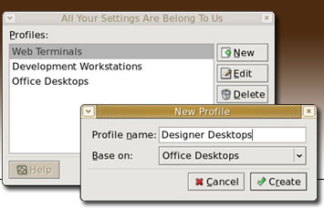
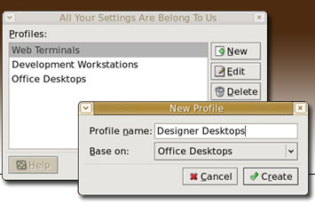

Contribute
There are several ways to contribute to the Sabayon project.
Testing, go here if you want to install sabayon and try it out.
Developing, get the code and try to fix errors and send patches to the maintainers.
Helping out on the mailing list and IRC for people having problems, letting them know where to go and what to do.
Contact
You can contact developers sending a mail to the Sabayon mailing list. You do not need to be subscribed.
We are also often available to chat on IRC.
Server: irc.gnome.org
Channel: #sabayon
The following is a description of the requirement and the choices made when designing the user profile files. The existing format may change in the future but unless some of the requirement were missing it seems the existing choice is simple and flexible enough that no big change should be needed in the future.
Format requirements
- incremental update
- container for sets of settings of different apps
- associate apps with settings
- independent update of one set of settings
- ability to store full file
- ability to save path with the content
- provide metadata for the whole set and for each apps settings
- possibility to merge and detect potential clashes on merges
- possibility to extract or remove a simple set of data
- allow to process with as standard tools as possible
Design choices
Use ZIP for the container format:
- platform ubiquity Linux/Windows/Mac...
- free software tools and libraries
- compressed
- allows to access a single stream without exploding everything like a compressed tar or cpio requires
- allow to store name/paths
Add an XML metadata section as the first entry:
- classic design (jar)
- allow to store all metadata informations associated
- easy to extend in a backward and forward compatible way
- open source tools and local knowledge
- a lot of configuration data already require XML handling so this doesn't add an extra dependancy
- load/modify subpart/save operations are easy on an XML tree
Internal structure
The container is a Zip, its content can be viewed using the command unzip -l /etc/desktop-profiles/test.zip
The first entry is the metadata part, it is an XML file describing the content of the archive. It can be viewed using the command unzip -p /etc/desktop-profiles/test.zip metadata:
- general description for the whole set of settings e.g. "Configuration for developers in project foo":
- administrative informations
- last change timestamp
- contact
- changelog
- per stream description
- name of the stream in the archive
- associated application
- description for settings e.g. "Mozilla starts full screen"
- administrative info
Then in the ZIP, each update has its own stream, the format is left to the corresponding user profile writer module. It can potentially be a full raw file, or a more synthetic description recognized by the specific profile module.
Note that an application can have one stream per different configuration file for example .rhopenoffice1.1/user/registry/data/org/openoffice/Inet.xcu and .rhopenoffice1.1/user/registry/data/org/openoffice/Office/Common.xcu would be 2 different streams maintained by the OpenOffice reader writer module. An application may have both raw configuration files and digested name/values pairs, but in different files.